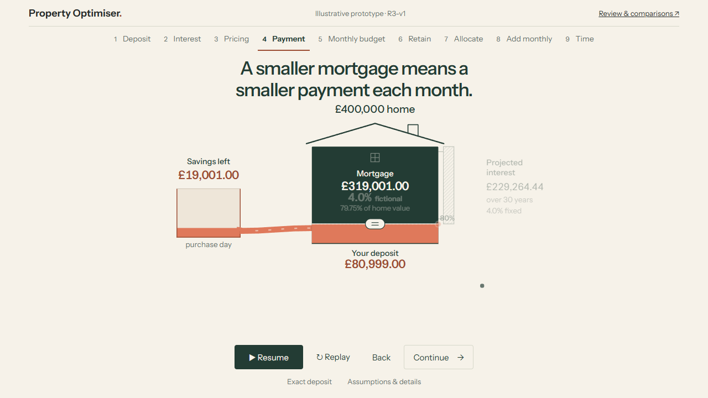
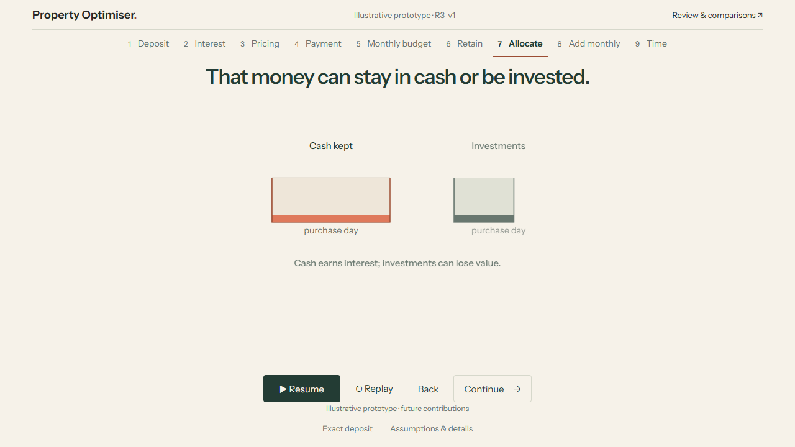
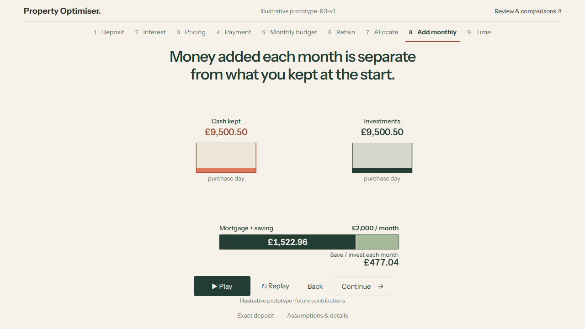
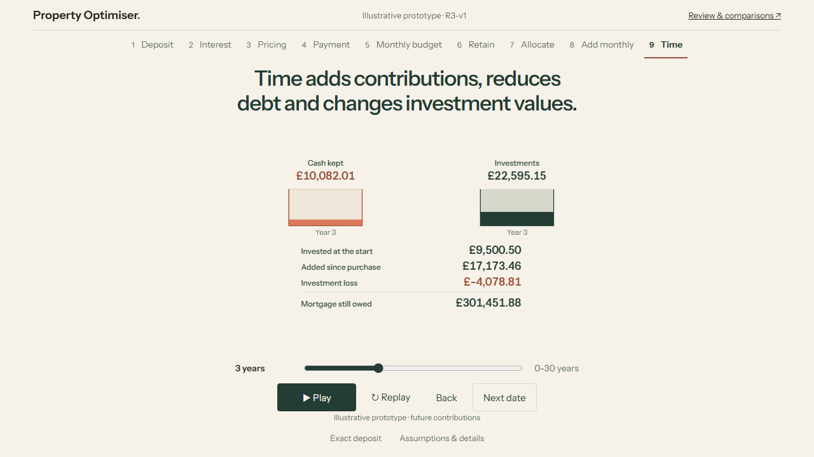
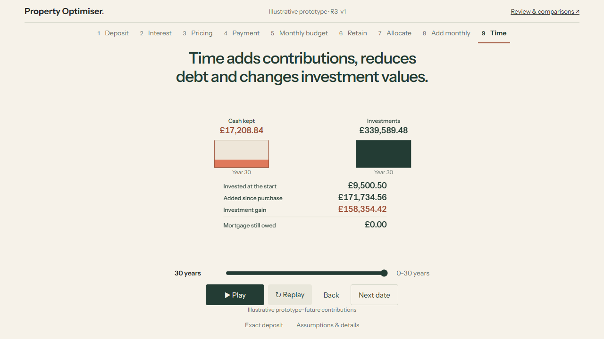
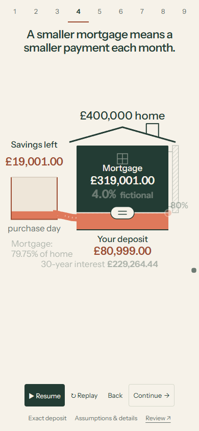
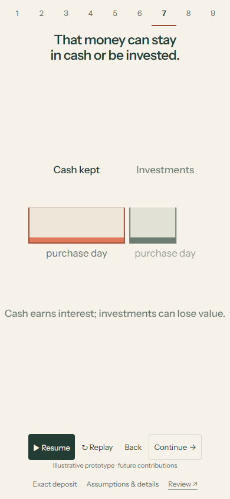
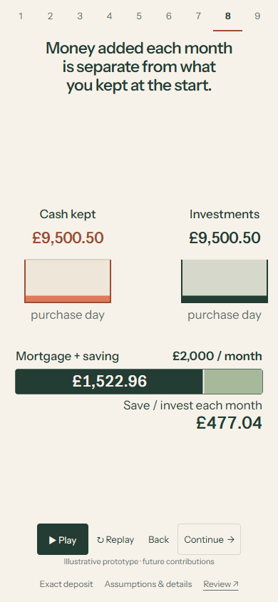
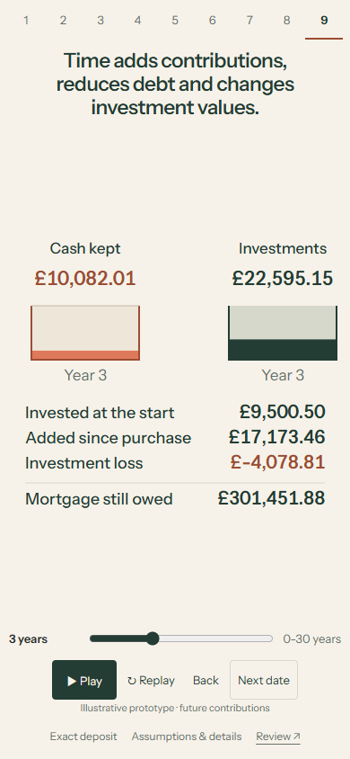
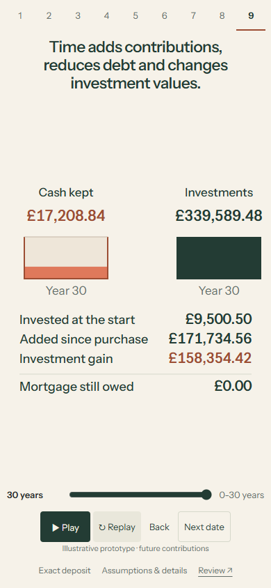

R3-v1 | 30 October 2026 | Owner visual feedback pending
Money kept today.
Money added over time.
The next connected lesson: a deposit changes both the money kept outside the home and the amount available to invest each month.
The three carried fixes
- The redundant mortgage-to-payment connector and threshold callout line are removed. Interest recedes before payment moves; sampled forward/backward and paused frames check collisions.
- Time now changes cash, accumulated contributions, investment gain/loss and mortgage debt. Purchase day and years 1, 3, 5, 10, 20 and 30 are complete data snapshots. The former cosmetic month loop is gone.
- Labels have more breathing room, dates are compact, and the active scene and controls fit all five required viewports. Retired objects free the space for the new relationship.
Your chosen deposit persists. The same savings object moves into focus, then divides into cash and investments. The monthly budget returns separately before its contributions accumulate. Exact entry, keyboard, touch dragging, pause, replay, backward navigation and reduced motion remain available.
Watch at normal speed
Unedited 1x Chromium recordings with ordinary input and reading pauses. Full playback and decoded frames are checked; these are browser recordings, not physical-device evidence.
Laptop: 1280 x 720
Mobile emulation: 390 x 844
Try these comparisons
Enter 79,999, 80,000 and 80,001 to cross the fictional pricing boundary. Compare deposits of 40,000 and 100,000: one retains more opening capital; the other leaves more monthly capacity. At Time, compare purchase day with year 3 and year 30. The year-3 loss is visible separately from positive contributions. With a 100,000 deposit, opening investments are zero but later additions still accumulate. No winning deposit is selected.
What the figures mean
This is an illustrative interface prototype. The owner authorized future-model contribution fixtures for design review; production successor implementation and validation remain later work.
| Values | Provenance |
|---|---|
| Purchase capital, rate, repayment and mortgage debt | Existing engine output under the unchanged fictional R2 mortgage assumptions. Debt uses the M1 schedule. |
| Cash growth | Existing M4 cash-growth primitive applied to an illustrative half-cash allocation and authored 2% annual effective rate. |
| Opening allocation, contributions and investment gain/loss | Isolated authored fixtures. Their arithmetic and interactions are checked; they are not validated successor-model results. |
The unchanged example is a 400,000 GBP home, 100,000 GBP allocatable cash after separately funded costs, a 40,000-100,000 GBP deposit and a 30-year repayment mortgage. Fictional rates are 4.5% above 80% initial borrowing and 4.0% at/below it, fixed for the term. A 2,000 GBP monthly budget covers the mortgage plus saving/investment.
Half the initial retained capital stays in cash and half is invested. All monthly saving capacity is invested at month end. The authored annual investment path is +4%, -18%, -6%, then +4% thereafter. It demonstrates uncertainty and accumulation; it is not a forecast or probability. No tax, fees, inflation, withdrawals or rate changes. Pot fills are schematic and cap at 60,000 GBP; exact labels remain primary.
Assumption identity r3-authored-path-2026-10-30-v1, effective 2026-10-30, agent-authored under owner authorization. GBP values use Decimal arithmetic offline and ROUND_HALF_UP at display. Unrounded monthly capacity drives contributions, so multiplying the rounded monthly caption can differ by pennies. The browser selects immutable rows and contains no financial projection engine. Timeline provenance and boundary examples | Unchanged R2 financial evidence.
Verification and limits
Six Python and six Node tests passed. All 60,001 legacy choices and 420,007 date/deposit snapshots were checked; mortgage debt uses an independent 100-digit annuity reference and selected investment paths an independent 80-digit replay. These new checks establish illustrative consistency, not successor-model validity.
Nine lessons fit 390x844, 390x664, 320x568, 1280x720 and 1440x1000: 45 cases. Nine trusted touch cases, three accessibility/reflow cases, original payment-transition checks, 135 new sampled transition frames, keyboard/time/replay/backward/stale-request tests and reduced motion were exercised. No axe violations were reported in tested page/dialog states. Enlarged text may reflow and scroll; zoom remains enabled.
Independent review caught interruption of the Time-entry animation, which could leave balances invisible. A failing regression reproduced it; scene takeover now completes the layout, and both Replay and range regressions pass. Visual review also corrected clipped date captions, false nonzero pot fills and tight label spacing.
browser | r3 | touch | access | transition | opportunity-transition | lifecycle | capture | media | preservation
No physical-phone testing, Safari/Firefox, screen-reader speech audit, novice comprehension study or owner visual acceptance. The full legacy backend/API suite was not rerun: those protected trees are unchanged. This checkpoint is not a reliable optimum, guaranteed outcome, full equal-funding comparison or formal M8 acceptance.
Exact source and publication
Source branch design/m8-r3-v1, based exactly on 7b48350c9032d5b0d604e68852ac9a148f257fc5. Tested implementation: 5ec7a65da8aab79513f47764d67f48194e107b0b.
Exact publication identities | Review metadata | SHA-256 asset manifest. Earlier iteration trees are preserved; neither main branch is changed.
Key states and paused transitions




















Owner review
Review the clarity of the opposing opportunities, meaningful time progression and spacing. ACCEPT / REVISE / TRY ALTERNATIVE / STOP. Work stops here for feedback; no R4 or calculator handover.
R2-v2 | R2-v1 | R1-v1 | Earlier studies